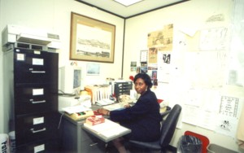

|
As our Project Assistant, she is responsible for management of the project office located in room 3117 at the Cultural Education Center in Albany. She is a graduate of our training program in social history research and has participated in all phases of project research. Her current responsibilities also include preparation of research resources for processing by interns, monitoring intern activities, office reception and hospitality, and the maintenance of administrative records. Joyce transcribes and transforms documents that will become webpages and proofreads online expositions. She also assists in the staging of public programs. Joyce Patterson grew up in South Carolina and has lived in Albany since 1973. Before joining the Colonial Albany Project, she was on the staff of the New York State Library (1980-89) and other agencies of state government. She is particularly interested in the Afro Albanian experience in early Albany and today. She is active in community organizations and with the public employees union, CSEA. To contact Joyce directly about any of the items mentioned above, e-mail or call her at (518) 486-2042. |